Normal distributions and statistical inference
Use a normal model to describe individual variation, then distinguish it from the uncertainty in estimates made from samples.
Two kinds of statistical questions
A bottling machine is intended to fill bottles to an average of 500 mL. One bottle contains 516 mL. A separate sample of 64 bottles has a mean of 503 mL. The individual bottle and the sample mean raise different questions. Is 516 unusual among individual bottles? What does the sample suggest about the average of the whole process?
Week 3 developed the mean and standard deviation as descriptions of observed data. This week adds a normal model for individual variation and methods for using a sample to estimate a population quantity. A z-score describes the position of a value; a confidence interval describes uncertainty in an estimate. Keeping the question in view is part of the mathematics.
An individual z-score describes how many standard deviations a measurement is from the population mean. An interval estimate addresses a different question: which population values remain plausible given the sampled observations and the method used? The bottling example lets us investigate both.
Describing a normal distribution
Measurements often cluster near a central value, with fewer observations far above or below it. A normal distribution is a symmetric, bell-shaped mathematical model of such variation. Whether it is appropriate depends on the actual data and process.
A normal model is specified by its mean \(\mu\), which locates the center, and standard deviation \(\sigma>0\), which sets the scale of variation. Increasing \(\sigma\) spreads the same total probability over a wider range, lowering the peak of the density curve.
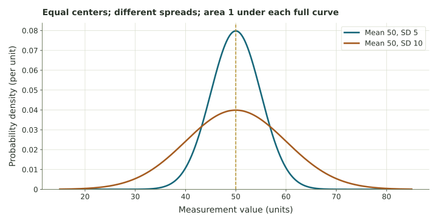
For a continuous measurement, the probability of a range is represented by the area under the curve over that range. The curve’s height is density, not a percentage. Mean, median, and the peak coincide in a normal distribution because it is symmetric and has one peak.
Here we specify a normal model by naming its mean and standard deviation. If we use the notation \(N(\mu,\sigma^2)\), its second entry is the variance, the square of the standard deviation. Naming both quantities avoids a notation ambiguity found across textbooks.
Before calculating normal probabilities, examine the measurements or the process being modeled. Strong skew, several distinct groups, or extreme observations can make a single normal model a poor description.
Two approximately normal processes have the same mean but different standard deviations. Which has the wider central range of measurements?
Compare your reasoning
The process with the larger standard deviation. Equal centers do not imply equal spreads. A statement about an unknown distribution being “normal” still needs evidence or a stated modeling assumption.
The Empirical Rule
For an approximately normal distribution, the Empirical Rule gives three useful approximations. About 68% of values lie within one standard deviation of the mean, about 95% within two, and about 99.7% within three. “Within” includes values on both sides of the center.
First choose the number of standard deviations k. Multiply the standard deviation by k, then subtract and add that distance from the mean. The resulting endpoints have the original measurement units.
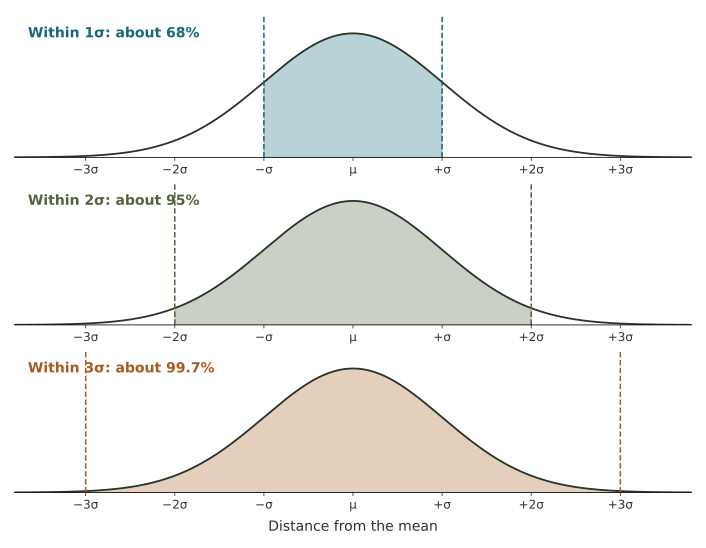
Delivery times
Suppose delivery times are approximately normal with mean 30 minutes and standard deviation 4 minutes. The central intervals are:
| Distance from mean | Calculation | Interval | Approximate share |
|---|---|---|---|
| 1 standard deviation | 30 ± 4 | 26–34 minutes | 68% |
| 2 standard deviations | 30 ± 8 | 22–38 minutes | 95% |
| 3 standard deviations | 30 ± 12 | 18–42 minutes | 99.7% |
If we observed 1,000 deliveries from this model, about 950 would fall between 22 and 38 minutes on average. A particular collection need not contain exactly 950. The rule describes a model proportion, not a guarantee about a finite count.
A normal model has mean 50 and standard deviation 6. Find the interval containing about 95% of individual values.
Compare your reasoning
Two standard deviations is 2 × 6 = 12. The interval is 50 − 12 = 38 to 50 + 12 = 62. The interval is about individual values, not uncertainty about an estimated population mean.
Complements and the two tails
If about 95% of values lie in the central region, the remaining 5% lie outside it. A normal curve is symmetric, so the two tails contain equal shares: about 2.5% below \(\mu-2\sigma\) and 2.5% above \(\mu+2\sigma\).
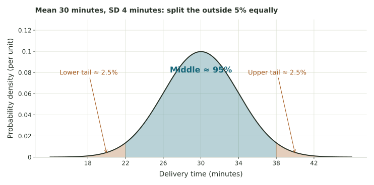
| Boundary | Central share | Outside both sides | One tail |
|---|---|---|---|
| μ ± σ | 68% | 32% | 16% |
| μ ± 2σ | 95% | 5% | 2.5% |
| μ ± 3σ | 99.7% | 0.3% | 0.15% |
For the delivery example, about 16% take longer than 34 minutes, and about 2.5% take longer than 38 minutes. These are approximate Empirical Rule answers. A normal-distribution calculator gives slightly different, more precise values. Use the approximation requested by a question.
The rule does not directly give a percentage for every boundary. For example, a cutoff 1.9 standard deviations above the mean is between the one- and two-standard-deviation marks. The Empirical Rule alone does not supply its exact upper-tail probability.
Approximately what percentage lies above one standard deviation above the mean? What percentage lies outside the central two-standard-deviation interval?
Compare your reasoning
Above μ + σ is one tail: (100 − 68)/2 = 16%. Outside μ ± 2σ includes both tails: 100 − 95 = 5%. Check whether the question requests one side or both.
Z-scores and relative position
A raw value becomes meaningful in relation to a center and a spread. A z-score expresses a signed distance from the mean in standard-deviation units:
Subtracting the mean finds the signed distance in the original units. Dividing by the standard deviation changes the unit of that distance. Positive means above the mean; negative means below; zero means at the mean. The original measurement units cancel, so z has no measurement unit.
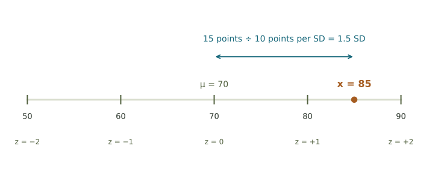
Calculate, interpret, then reverse
With mean 70 and standard deviation 10, a value of 85 has \(z=(85-70)/10=1.5\). A value at z = −2 is \(x=70+(-2)(10)=50\). A negative z-score does not require a negative raw value.
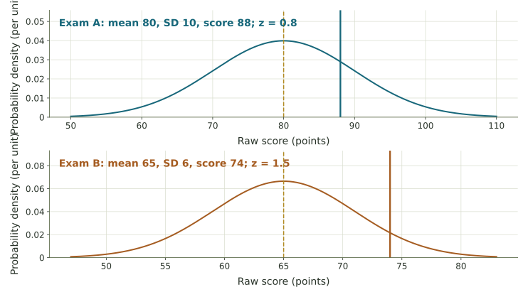
For quantities such as completion times, a lower value may be preferred. A negative z-score can therefore describe a faster-than-average time. The sign locates a value; the context determines how to evaluate that location.
You can calculate a z-score for a distribution with a finite mean and positive standard deviation even if it is not normal. Normality matters when you use the bell curve or Empirical Rule to interpret percentages from that score.
A value is 44 in a distribution with mean 50 and standard deviation 6. Find z. Then recover the raw value with z = 2 in that distribution.
Compare your reasoning
The first z-score is (44 − 50)/6 = −1: one standard deviation below the mean. For z = 2, x = 50 + 2(6) = 62. Location and percentage are different quantities.
Populations, samples, parameters, and statistics
A population is the entire collection the question concerns. A sample is the subset actually observed. Define the population before collecting the sample: “all boxes from this production process during this month” is more specific than “all cereal.”
| Population quantity: parameter | Observed sample quantity: statistic |
|---|---|
| Mean μ of all units in the defined population | Mean x̄ calculated from the sample |
| Proportion p of all units with a property | Proportion p̂ calculated from the sample |
| Standard deviation σ of the population | Standard deviation s calculated from the sample |
A campus survey
A college wants the proportion of enrolled students who commute by bus. In a sample of 100 students, 34 answer yes. The sample proportion is \(\widehat p=34/100=0.34\), or 34%. The unknown parameter is the proportion of all enrolled students who commute by bus. The sample size 100 is not that proportion.
A mean describes a numerical measurement, such as fish length. A proportion describes the share satisfying a condition, such as using the bus. Both can be estimated from samples, but they are different parameters with different units.
How units are selected affects what the sample can represent. A simple random sample gives each subset of the specified size an equal chance of selection. A voluntary survey may overrepresent people who choose to respond. A large sample drawn from the wrong group does not automatically estimate the intended population well.
A producer tests 100 batteries and finds a mean lifetime of 18.4 hours. Name the statistic, its target parameter, and the sample size.
Compare your reasoning
The statistic is the sample mean 18.4 hours. Its target is the unknown mean lifetime of all batteries in the defined production population. The sample size is 100. A mean lifetime is not a count of tested batteries.
Sampling variability and standard error
If we selected another random sample, its members would usually differ, and so would its mean. That ordinary sample-to-sample variation is sampling variability. Imagine repeating the whole procedure: select a sample, calculate a mean, record it, and start again with a new sample. The distribution of those recorded means is a sampling distribution.
There are now two spreads to distinguish. The standard deviation of individuals describes differences among individual units. The standard error of the mean describes how much the sample mean varies across repeated samples of the same size.
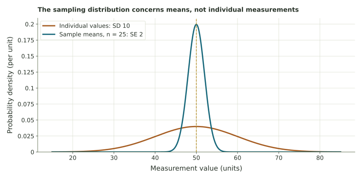
For independent, identically distributed observations with population standard deviation σ, the mean has standard error \(\sigma/\sqrt n\). When σ is unknown, we often estimate that standard error with \(s/\sqrt n\). With σ = 10 and n = 25, it is \(10/5=2\).
If the population is normal, its independent sample means are normal as well. For many other populations, an approximately normal sampling distribution can emerge as the sample grows, under the conditions of the central limit theorem. This does not make the original population normal. There is no sample size that automatically makes every sampling design and distribution suitable.
Individual measurements have standard deviation 12 units. Under independent sampling, what is the standard error of a mean from n = 36? What stays at 12?
Compare your reasoning
The mean’s standard error is 12/√36 = 2 units. The population standard deviation of individual measurements stays at 12 units. These answer different spread questions.
Interval estimates and comparison values
A sample mean is a point estimate. An interval estimate adds a margin of uncertainty. Most questions in this unit supply the margin of error E; your task is to construct and interpret the endpoints:
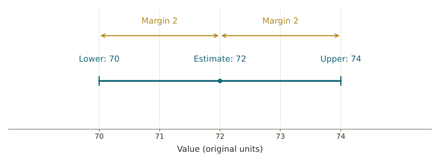
Hours and percentage points
A mean estimate of 4.6 hours with margin 0.7 hours gives [3.9, 5.3] hours. A population proportion estimated at 54% with margin 5 percentage points gives [49%, 59%]. Subtracting 5% of 54 would answer a different question.
Compare a proposed parameter value with both endpoints. If it lies inside, including an endpoint, it is not excluded by this interval. That does not prove the proposed value is correct. If it lies outside, the interval excludes it under the method and assumptions used. That does not establish impossibility or explain what caused the discrepancy.
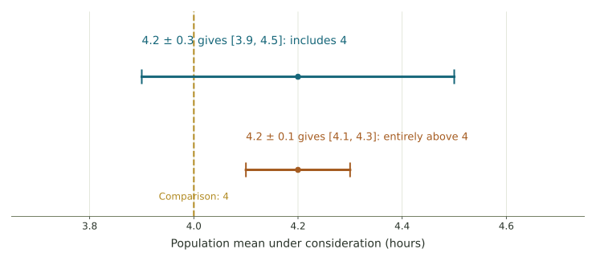
The margin alone does not tell us a confidence level or validate a sampling procedure. A study should report how it obtained its interval. For a sufficiently large, appropriately sampled independent dataset, \(\bar x\pm2s/\sqrt n\) is a familiar rough 95% mean interval. With mean 72, sample SD 10, and n = 100, this gives \(72\pm2\), or [70, 74]. More precise mean intervals commonly use a t multiplier when σ is estimated.
An estimate is 3.7 hours with margin 0.5 hours. Find the interval and decide whether 4 hours is excluded.
Compare your reasoning
The interval is [3.2, 4.2] hours. Four is inside, so it is not excluded by this interval. Neither 3.7 nor the interval describes every individual observation.
Interpreting a confidence level
A 95% confidence level describes the long-run coverage of a procedure. Imagine repeatedly taking samples by the same valid method and building an interval each time. About 95% of those intervals would contain the fixed population parameter. The interval changes with the sample; the population parameter remains fixed in this picture.
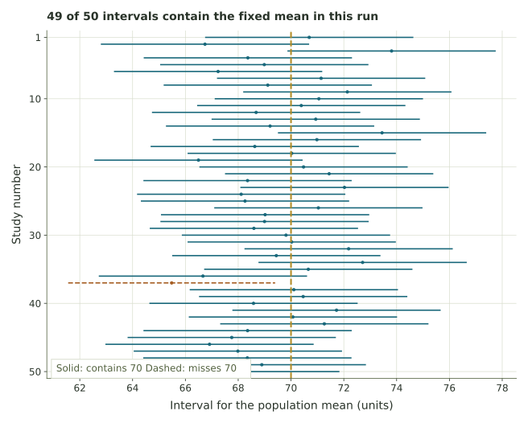
For a fixed population quantity, a computed confidence interval either covers it or does not. The confidence level describes the long-run proportion of intervals that cover the quantity when the sampling procedure is repeated under the stated assumptions.
In the repeat-sampling experiment, the population mean is known because we chose the model. We can therefore check which intervals contain it. In an actual study, the unknown mean is precisely what we are trying to estimate.
For fixed data and the same method, seeking higher confidence generally requires a wider interval. A narrower interval is more precise, but its width alone does not establish that the study is representative or unbiased.
A valid 95% procedure is used for 50 independent samples. Must exactly 95% of those 50 intervals contain the population mean?
Compare your reasoning
No. Coverage is a long-run property; a finite run varies. In fact, 95% of 50 is 47.5 intervals, which cannot be an observed count. Nor does a 95% mean interval need to contain 95% of individual observations.
Sample size, precision, and bias
For comparable studies with the same confidence level, variability, and sampling design, margin of error often scales approximately as \(1/\sqrt n\). To compare a baseline study with a planned sample size, use
If n changes from 100 to 400, the sample is four times as large but its square root is only twice as large. A baseline margin of 10 becomes approximately 5. To halve a margin, we need about four times the sample; to cut it to one-third, about nine times the sample.
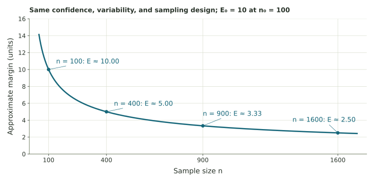
These are planning comparisons. A larger actual sample can give a different mean, standard deviation, or estimated proportion, so its interval need not keep the old center or exactly match the planned width. The sample-size rule does not remove bias in selection or measurement, and correlated observations may provide less information than the same number of independent observations.
A study has n = 200. Approximately what sample size would halve its margin under comparable conditions?
Compare your reasoning
Four times 200 gives 800. Doubling to 400 would instead multiply the margin by 1/√2, about 0.707. A larger sample does not automatically repair bias.
Choosing and interpreting a method
| Question | Method | Meaning of the answer |
|---|---|---|
| Where is one value relative to a center and spread? | z = (x − μ)/σ | Signed distance in standard deviations |
| What share of a normal model lies in a central region or tail? | Empirical Rule and symmetry | Approximate percentage of individuals |
| What parameter values does a sample interval allow? | Estimate ± supplied margin | Interval for the population quantity |
| How might a comparable study’s margin change with n? | Square-root scaling | Approximate precision comparison |
Two questions about bottles
Use the stated normal model with mean 500 mL and SD 8 mL. An individual bottle at 516 mL has z = 2; the Empirical Rule assigns approximately 2.5% to its upper tail. A separate sample mean of 503 mL with margin 2 mL gives [501, 505] mL for the process mean. This interval excludes 500. An individual-value calculation and a sample-mean interval can therefore say different things without disagreeing.
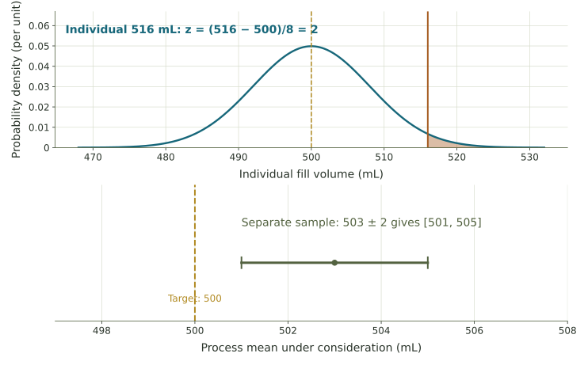
Statistical conclusions also depend on the population definition, selection method, measurement quality, and assumptions. State what was estimated and what the comparison supports. An interval alone does not identify a cause or justify a claim about every individual.
A distribution has mean 60 and SD 12. An individual value is 78. A separate sample gives mean 63 with margin 3. Find the individual z-score and the sample interval. Does the interval contain 60?
Compare your reasoning
The z-score is (78 − 60)/12 = 1.5. The sample interval is [60, 66], so 60 is included at its lower endpoint. The z-score locates an individual; the interval estimates a population mean.
A measurement used to control a process can be noisy even when the process itself is stable. The distinction between individual variation and uncertainty about a population quantity will matter when we study feedback.
References: NIST’s normal distribution, confidence limits for a mean, and confidence-interval interpretation. The chapter’s core exercises supply their margins; calculating a t interval is outside the assigned arithmetic here.
Week 4 activities
- Explorer: normal models, supplied-margin intervals, and repeated sampling
- Laboratory: five investigations in normal models and inference
- Nutrition label: compare a claimed population mean with a sample interval
- AI evaluation: define a benchmark’s population and uncertainty
- Additional AI practice: compare two benchmark estimates
- Discussion: estimating what matters to you
- Illustrated chapter, review exercises, and solutions